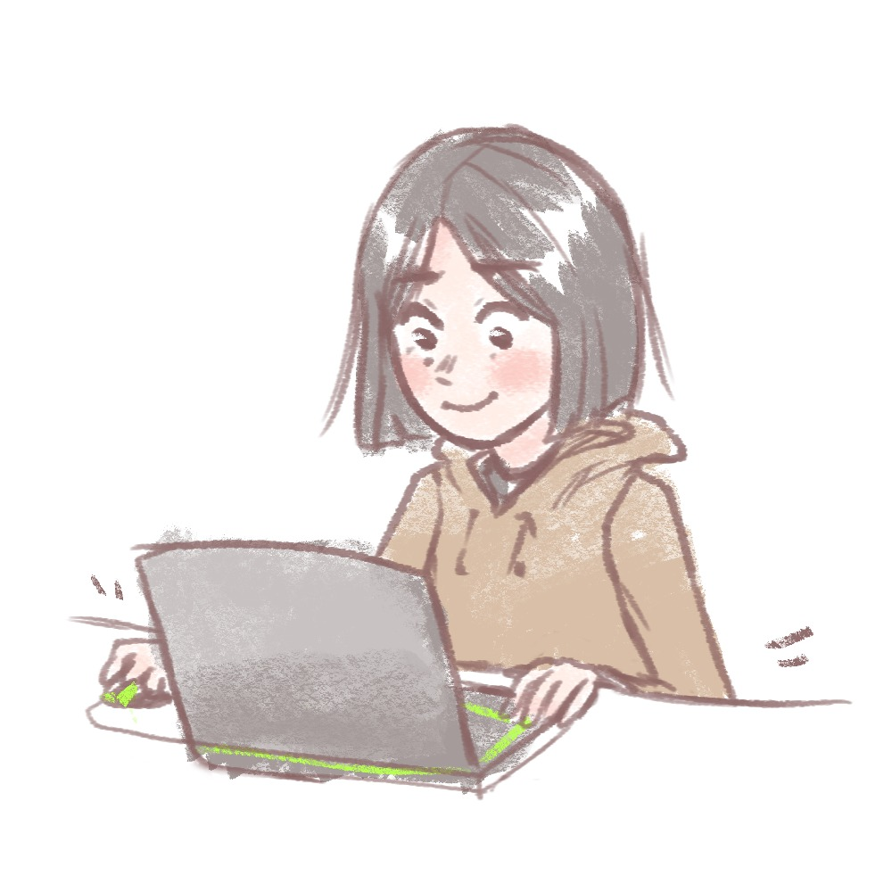

PORTAFOLIO
Francisca Rabanal · Estudiante de Ingeniería en Computación e Informática (UBB)
Sobre mí

Soy Francisca Rabanal, estudiante de Ingeniería en Computación e Informática en la Universidad del Bío-Bío. Tengo conocimientos en programación con stack MERN, Arduino y Python. Me gustaría seguir aprendiendo sobre desarrollo web y, especialmente, desarrollo móvil con Kotlin.
Proyectos destacados
Próximamente: agrega aquí una grilla con 3–6 proyectos (título, breve descripción, enlaces a GitHub y demo).